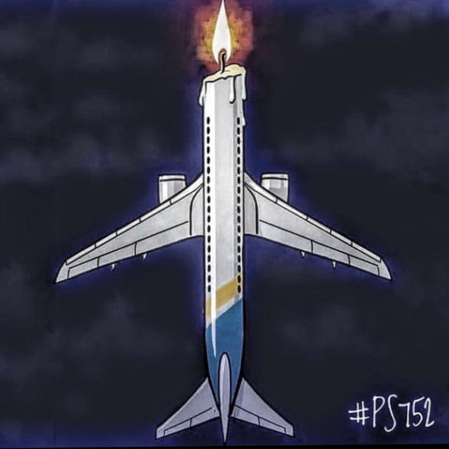
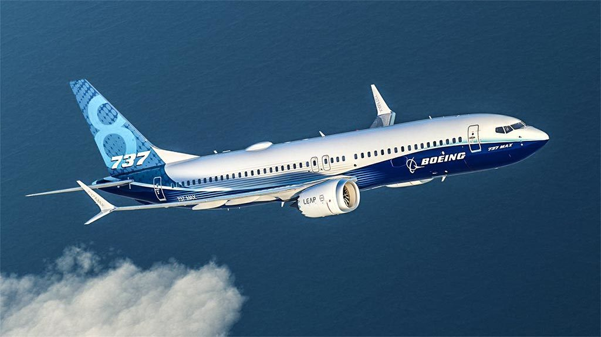

Президент Украины Владимир Зеленский выразил соболезнования родным и близким погибших пассажиров и членов экипажа. По его указанию Совет национальной безопасности и обороны сформировал оперативный штаб. 11 января 2020 года Владимир Зеленский призвал правительство Ирана привлечь к ответственности виновных в авиакатастрофе и обсудить вопрос компенсации!

Весной Boeing сократил выпуск Mах с 70 до 42 в месяц, а с января вовсе приостановит производство. Сейчас у компании скопилось примерно 400 построенных, но не поставленных лайнеров Mах.
